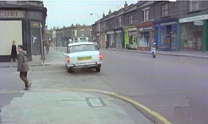
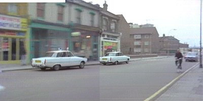
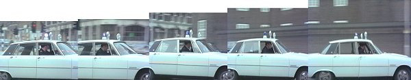
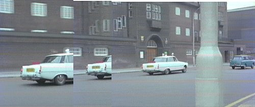
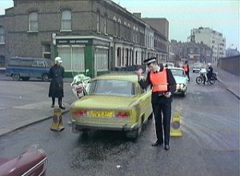
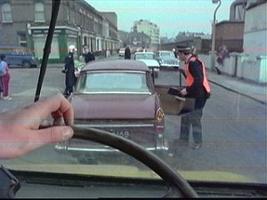
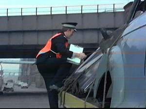
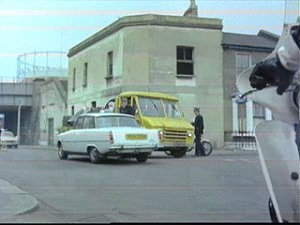
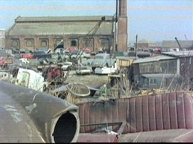
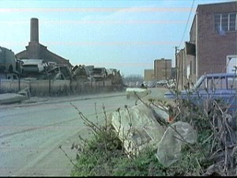

|
|
HELP FIND THE FOLLOWING LOCATIONS
PAGE 70
THE
PROTECTORS: Blockbuster
(Jeremy Summers: 1973)
York Road, Wandsworth,
SW18 - A call
goes out to the Police reporting the robbery at Saunders
Chemical Works and a patrol car responds.


 Other
scenes already identified in Wandsworth
near Fairfield Street.
Other
scenes already identified in Wandsworth
near Fairfield Street.
Lennox Road, London N4: The stolen
Security Van drives into a yard (Fonthill Mews) where it is re-sprayed
white while the police continue to search the area in their patrol car.
Identified by Alan Field, March 2024


Wandsworth High Street, SW18 - Police cars continue to search nearby roads.


 The
police cars are driving past Wandsworth
Technical College (now
called South Thames College) in Wandsworth
High Street, London sw18 - Mike Saunders,
October 2004
The
police cars are driving past Wandsworth
Technical College (now
called South Thames College) in Wandsworth
High Street, London sw18 - Mike Saunders,
October 2004
Fairfield Street, SW18 - Villains wait at a roadblock for their consignment of car parts to be checked. The constable recognises the crushed van and signals to his partner before letting the truck through.




Brent
Terrace NW2, the former Brent Gas Works: Glen Bailey’s
wrecking yard.
Identified by Alan Field, March 2023


Think you know a spot? Need a bigger image? Email me.
< Previous | Index | Avengerland | Next >
Copyright © 2003 Anthony R. McKay